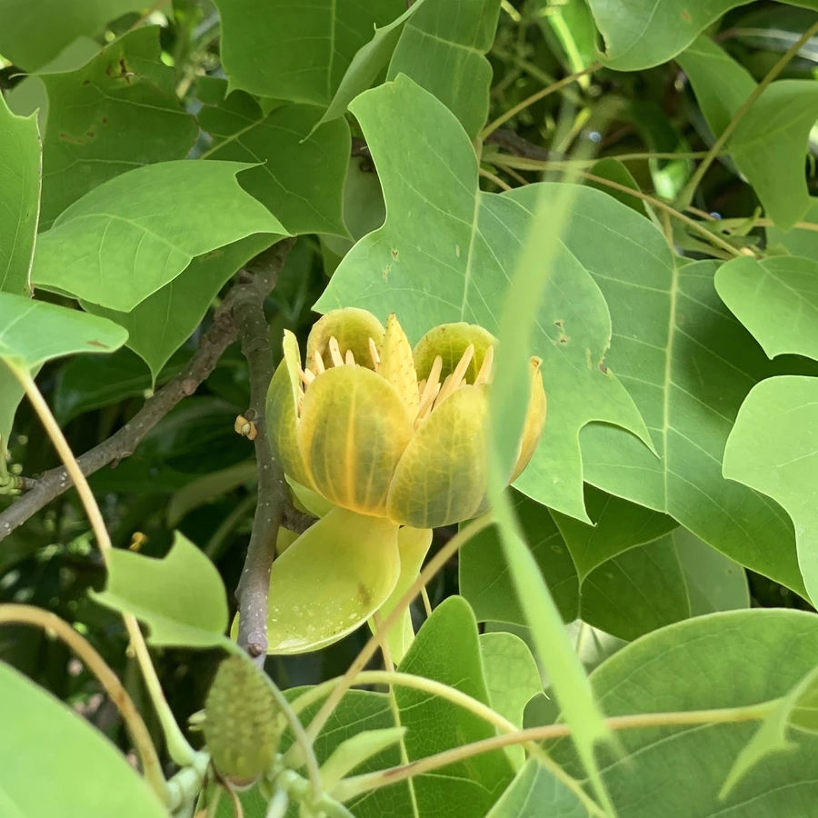

乔木 · 植物界
鹅掌楸 Liriodendron chinense

中国特有的珍稀落叶乔木，叶片形似鹅掌、花朵似郁金香，是著名的孑遗植物，被列为国家二级保护植物。
- 分类
- 门被子植物门纲木兰纲目木兰目科木兰科属鹅掌楸属
- 栖息环境
- 海拔 1000–1800 米的山地落叶阔叶林，喜温暖湿润
- 地理分布
- 中国长江流域以南及华东、华中、西南山地，为中国特有树种
- 保护级别
- 暂无评估；中国国家二级保护野生植物
物种志
鹅掌楸为落叶乔木，高可达 40 m，树皮灰白色、纵裂；叶片互生，形似马褂或鹅掌，先端平截或微凹，两侧各具 1–2 个裂片，叶柄长。花期 4–5 月，花单生于枝顶，花冠杯状，花被片 9 枚、外轮绿色、内轮黄绿色并带橙色条纹，形似郁金香；聚合翅果纺锤形，成熟时散出带翅种子。
鹅掌楸是中国特有树种，分布于长江流域以南及华东、华中、西南的山地，喜光、喜温暖湿润，适宜深厚肥沃、排水良好的酸性土壤。木材纹理直、易加工，可供建筑、家具与细木工用；树形端正、叶形奇特、花似郁金香，是世界著名的观赏树种；树皮可入药。由于野生资源稀少、天然更新困难，鹅掌楸被列为国家二级保护野生植物，各地已开展人工繁育与引种栽培。
形态与习性
- 株高可达 40 m，树皮灰白色
- 花期4–5 月，花似郁金香
- 果期9–10 月，聚合翅果纺锤形
- 光照喜光，幼树稍耐阴
- 土壤深厚肥沃、排水良好的酸性壤土
- 主要用途建筑与家具用材、园林观赏、树皮入药
趣味知识
- 鹅掌楸的叶片先端平截、两侧具裂片，形似鹅掌或马褂，因此得名。
- 鹅掌楸的花形似郁金香，因此英文名被称为“中国郁金香树”。
- 鹅掌楸是著名的孑遗植物，野生资源稀少，被列为国家二级保护植物。